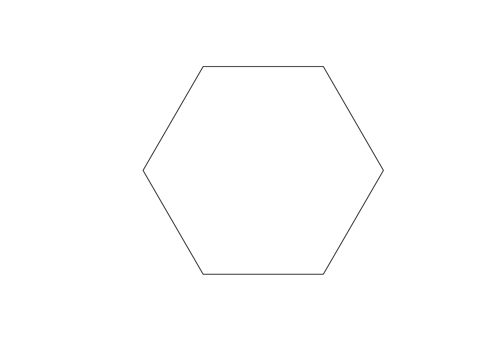
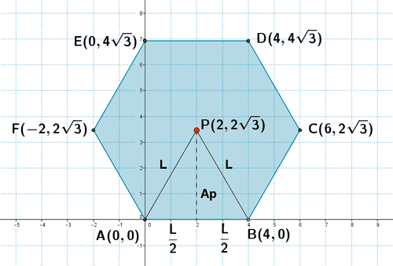
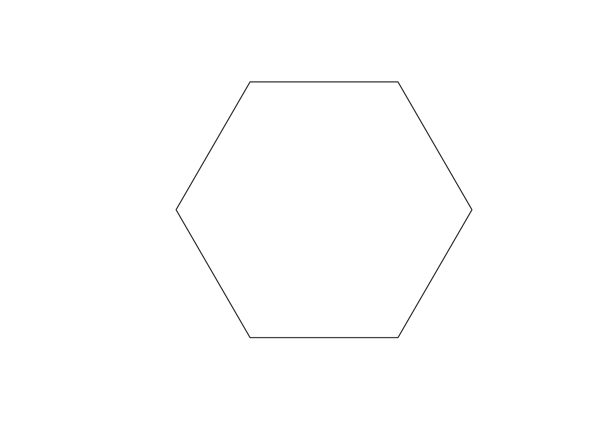
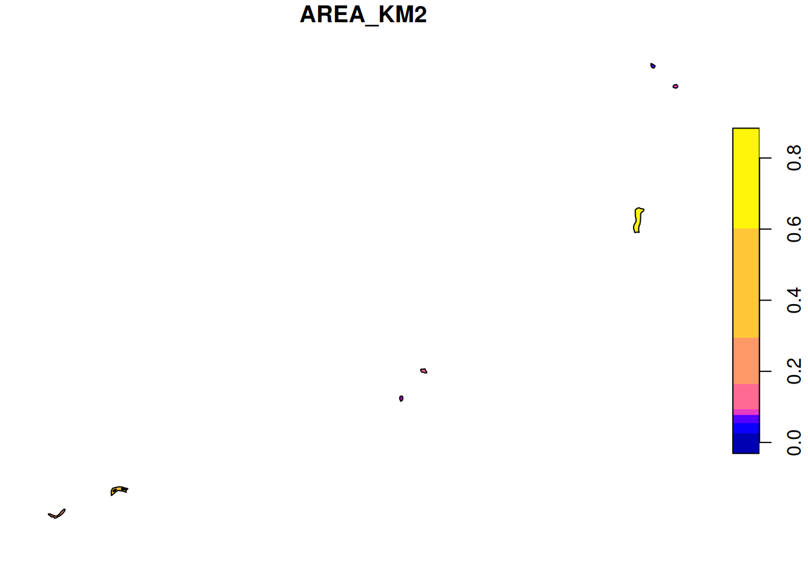
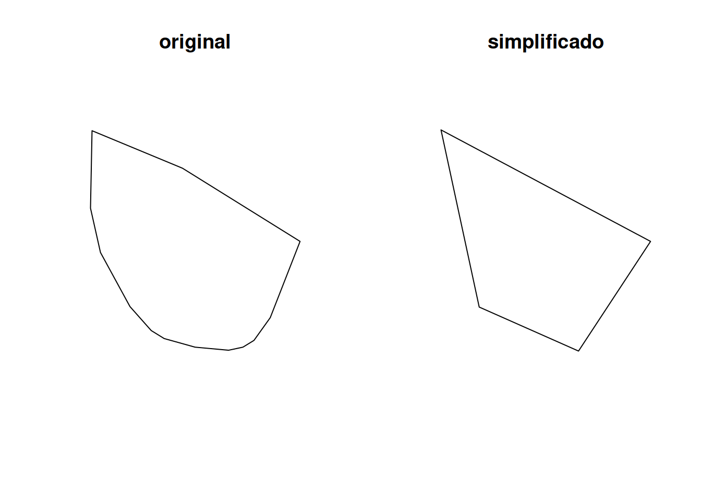
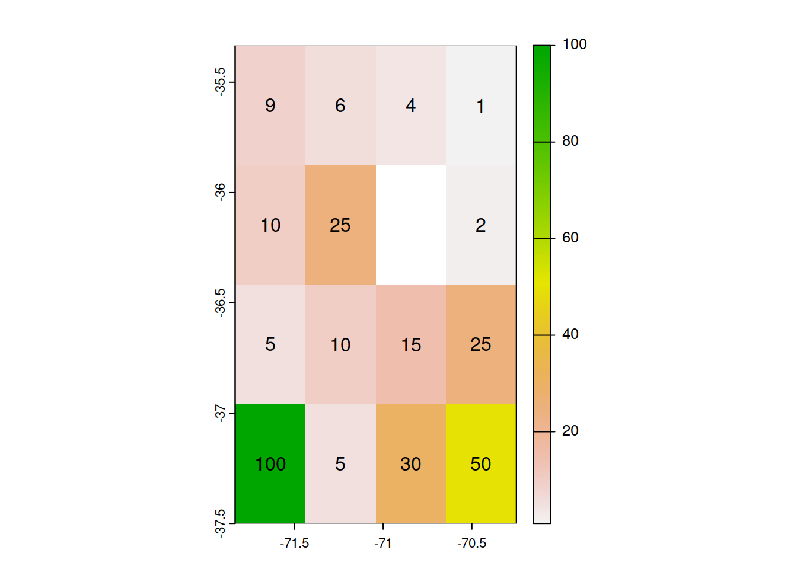
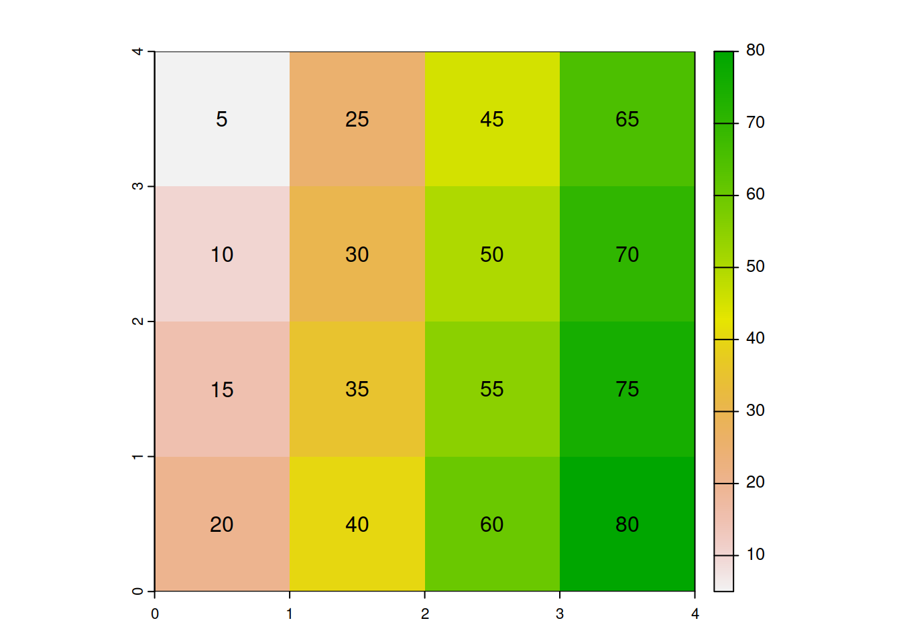
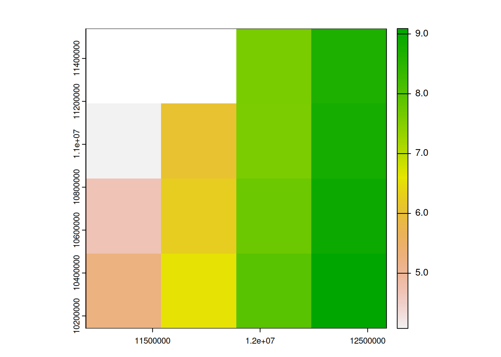
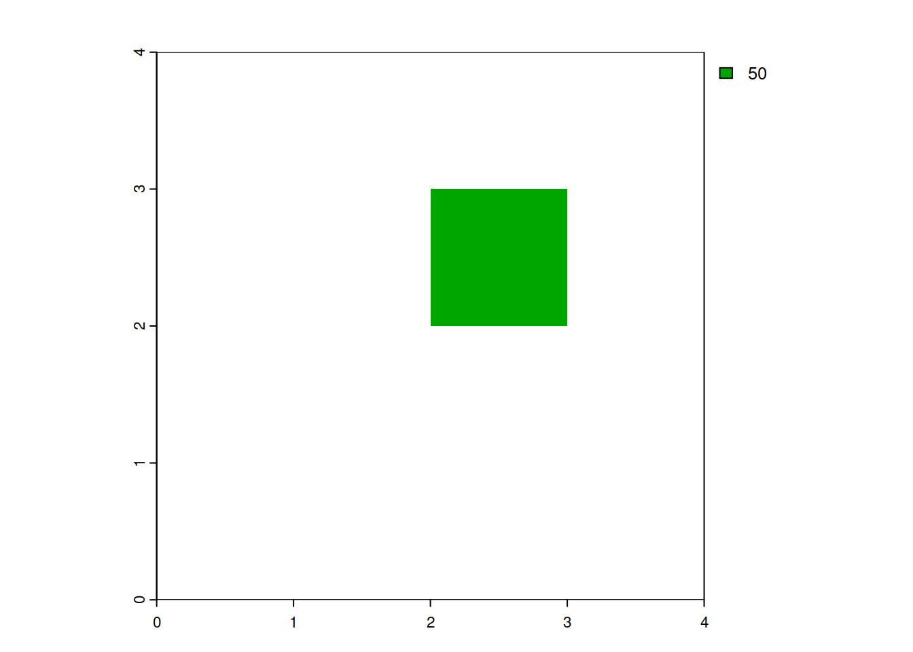
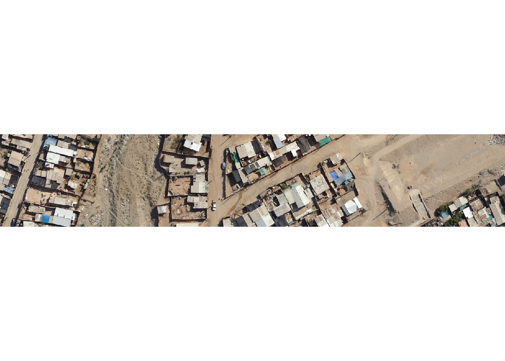

library(sf)Linking to GEOS 3.11.1, GDAL 3.6.2, PROJ 9.1.1; sf_use_s2() is TRUEm <- matrix(c(4,0,6,2*sqrt(3),4,4*sqrt(3),0,4*sqrt(3),-2,2*sqrt(3),0,0,4,0),ncol=2,byrow = TRUE)
pol <- st_polygon(list(m))
plot(pol)
SIG Avanzado (IMSE1017)
Los datos que utilizará para la evaluación son los siguientes:
Indice Calidad de Aguas: datos de la Dirección General de Aguas (DGA) con ubicaciones de puntos de Agua Potable Rural (APR) con mediciones de índices de calidad de agua.Inventario Lagos: datos de la Dirección General de Aguas (DGA) con los lagos presentes en el territorio nacional.dem Chile: datos de elevación (metros) para el territorio de Chile continental.imagen Copiapo: imagen aérea capturada sobre una zona de la ciudad de Copiapo.Los datos los debe descargar desde acá
R: Se puede utilizar gracias a los paquetes que proporcionan las clases y funciones para procesar datos geospaciales de tipo raster y vectorial. En R podemos utilizar {terra} y {sf} para trabajar con datos raster y vectoriales.
R: R utiliza las clase
sfpara trabajar con datos vectoriales yspatRasterpara datos raster.
(10pts) Liste los tipos de geometrias que se pueden trabajar con el paquete {sf}. >R: Puntos, lines, polígonos, multiple puntos, multiple lineas, multiple poligonos, colección de geometrias.
(10pts) Describa los objetos de clase sf. > R: Los objetso de clase sf están compuestos por un data.frame en donde se almacenan los atributos y una columna sfc donde se almacenan las geometrias como clas sfg correspondiente a cada observación.

library(sf)Linking to GEOS 3.11.1, GDAL 3.6.2, PROJ 9.1.1; sf_use_s2() is TRUEm <- matrix(c(4,0,6,2*sqrt(3),4,4*sqrt(3),0,4*sqrt(3),-2,2*sqrt(3),0,0,4,0),ncol=2,byrow = TRUE)
pol <- st_polygon(list(m))
plot(pol)
Inventario Lagos e indique lo siguiente :
lagos <- read_sf('data/Lagos/')
#tipo de geometria
class(lagos$geometry)[1] "sfc_MULTIPOLYGON" "sfc" #dimensión
str(lagos$geometry[1])sfc_MULTIPOLYGON of length 1; first list element: List of 1
$ :List of 1
..$ : num [1:113, 1:2] 429493 429449 429373 429274 429298 ...
- attr(*, "class")= chr [1:3] "XY" "MULTIPOLYGON" "sfg"# SRC
lagos_src <- st_crs(lagos,parameters = TRUE)
#datum y huso
lagos_src$Name[1] "WGS 84 / UTM zone 19S"# EPSG
lagos_src$srid[1] "EPSG:32719"# cantidad de variables
ncol(lagos)-1[1] 21# Cantidad de observaciones
nrow(lagos)[1] 2067#extensión
st_bbox(lagos) xmin ymin xmax ymax
16712.94 3870127.72 697838.48 8051367.40 Inventario Lagos realice lo siguiente:
lagos_stgo. ¿Cuántos son?lagos_stgo a SRC EPSG 4326 y reemplázelo.lagos_stgo y simplifique su geometria, considerando una tolerancia de 30m. Haga un plot de la geometría original y simplificada.# a) (15pts) seleccione los lagos que pertenecen a la provincia de Santiago y asignelo a un objeto `lagos_stgo`. ¿Cuántos son?
lagos_stgo <- lagos[lagos$PROVINCIA == 'Santiago',]
## ¿cuantos son?
nrow(lagos_stgo)[1] 34# b) (10pts) reproyecte (transforme) el sistema de referencias de coordendas de `lagos_stgo` a SRC EPSG 4326 y reemplázelo.
lagos_stgo <- st_transform(lagos_stgo,4326)
# c) (15pts) haga un mapa (con plot) en donde se muestre con colores la variación de la variable área (AREA_KM2)
plot(lagos_stgo[,'AREA_KM2'])
# d) (20pts) seleccione el primer lago de `lagos_stgo` y simplifique su geometria, considerando una tolerancia de 30m. Haga un plot de la geometría original y simplificada.
lagos_stgo <- st_transform(lagos_stgo,32719)
lago_sim <- st_simplify(lagos_stgo[1,],dTolerance = 30)
par(mfrow = c(1,2))
plot(lagos_stgo$geometry[1],main ='original')
plot(lago_sim$geometry,main = 'simplificado')
Indice Calidad Aguas y realice lo siguiente:
calag_rom_buf.calag_rom_buf.calag_rom_buf en formato geopackage y con el nombre ``ica <- read_sf('data/Indice_Calidad_de_Aguas')
# a) (15pts) Seleccione las observaciones que se encuentran en la comuna de "Romeral". ¿Cuántas puntos hay?
ica_rom <- ica[ica$NOM_COM == 'ROMERAL',]
nrow(ica_rom)[1] 3# b) (10pts) cree un buffer de 1000 metros en los puntos que se encuentran en Romeral y asignelo al objeto `calag_rom_buf`.
calag_rom_buf <- st_buffer(ica_rom,1000)
# c) (10pts) ¿cuáles son los nombres de las cinco primeras variables de `calag_rom_buf`.
names(calag_rom_buf)[1:5][1] "OBJECTID_1" "OBJECTID" "NOMBRE_APR" "NOMBRE_BNA" "COD_BNA" # d) (15pts) guarde el objeto `calag_rom_buf` en formato geopackage y con el nombre `calidad_agua_romeral_buffer_1000m`
write_sf(calag_rom_buf,'data/calidad_agua_romeral_buffer_1000m.gpkg')-Fila 1: 9, 6, 4, 1
-Fila 2: 10, 25, NA, 2
-Fila 3: 5, 10, 15, 25
-Fila 4: 100, 5, 30, 50
library(terra)terra 1.7.39v <- c(9,6,4,1,10,25,NA,2,5,10,15,25,100,5,30,50)
r <- rast(xmin = -71-50/60,xmax=-70-15/60,ymin=-37-30/60,ymax=-35-20/60,ncols=4,nrows=4)
values(r) <- v
plot(r);text(r)
library(terra)
r <- rast(x=matrix(1:16*5,4,byrow = FALSE),crs="EPSG:4326")
plot(r);text(r)
Transforme el sistema de referencia de coordenadas del raster anterior a coordenadas UTM Huso 19 Sur datum WGS84.
r_proj <- project(r,'EPSG:32719')
r_projclass : SpatRaster
dimensions : 4, 4, 1 (nrow, ncol, nlyr)
resolution : 349434.9, 349434.9 (x, y)
extent : 11189930, 12587670, 10141643, 11539382 (xmin, xmax, ymin, ymax)
coord. ref. : WGS 84 / UTM zone 19S (EPSG:32719)
source(s) : memory
name : lyr.1
min value : 6.624345
max value : 72.631157 \[\sqrt{pixel+10}\]
r_nuevo <- sqrt(r_proj+10)
plot(r_nuevo)
NA.r[r < 46 | r > 54] <- NA
plot(r)
{terra}.funs = c(mean,median,sd)
sapply(funs, \(fun) global(r,fun))$mean
[1] NA
$global
[1] NA
$sd
[1] NAdem_chile.tif en R e indique utilizando una función de R:
dem_chile <- rast('data/dem_chile.tif')
# a) (5pts) clase del objeto
class(dem_chile)[1] "SpatRaster"
attr(,"package")
[1] "terra"# b) (5pts) número de columnas, filas y capas
dim(dem_chile)[1:2][1] 4656 1884# c) (5pts) resolución espacial
res(dem_chile)[1] 0.008333333 0.008333333# d) (5pts) sistema de referencia de coordenadas
crs(dem_chile,describe = TRUE) name authority code area extent
1 WGS 84 EPSG 4326 World -180, 180, 90, -90# e) (5pts) el archivo se encuentra almacenado en la memoria o en el disco.
inMemory(dem_chile)[1] FALSEsources(dem_chile)[1] "/mnt/nube/OneDrive/R-projects/Clases/IMSE1017/Evaluaciones/Eva2_2023/data/dem_chile.tif"# f) (15pts) cuál es la elevación máxima y mínima
##máxima
global(dem_chile,'max',na.rm = TRUE) max
CHL_elv_msk 6414##mínima
global(dem_chile,'min',na.rm = TRUE) min
CHL_elv_msk -256imagen_copiapo.tif en R. Realice lo siguiente:
writeRaster) la primera capa del raster con el nombre copiapo_capa1.tifim <- rast('data/imagen_copiapo.tif')
# a) (15pts) cree un raster que corresponda a la suma de las cuatro capas.
im_nuevo <- sum(im)
# b) (10pts) reproyecte (transforme) el sistema de referencia de coordenadas a SRC EPSG 4326.
im_4326 <- project(im,'EPSG:4326')
# c) (10pts) haga un mapa en donde se pueda visualizar la composición de color RGB utilizando las tres primeras capas.
plotRGB(im)
# d) (15pts) guarde (`writeRaster`) la primera capa del raster con el nombre `copiapo_capa1.tif`
writeRaster(im[[1]],'data/copiapo_capa1.tif')